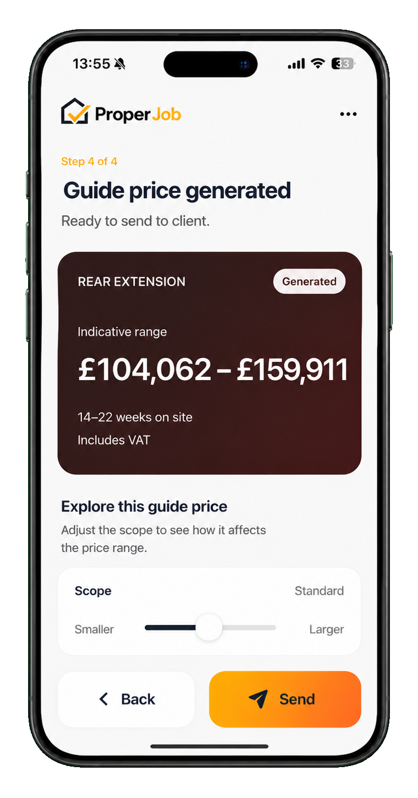
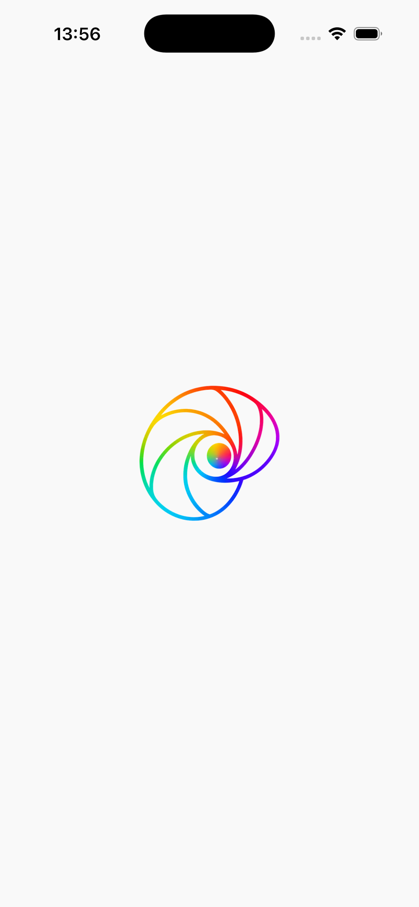
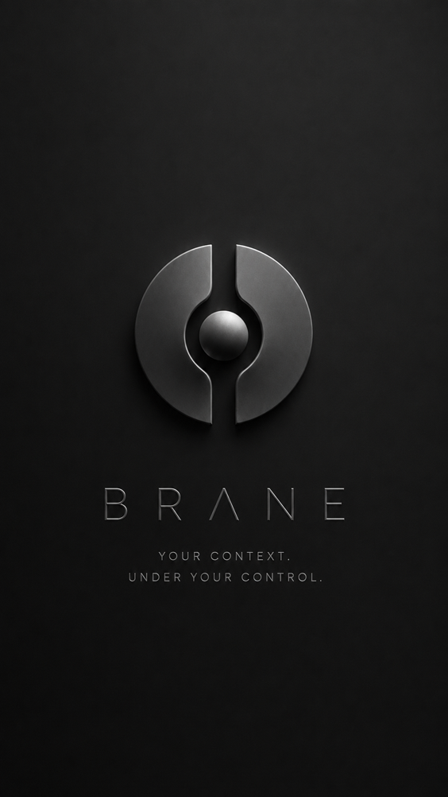
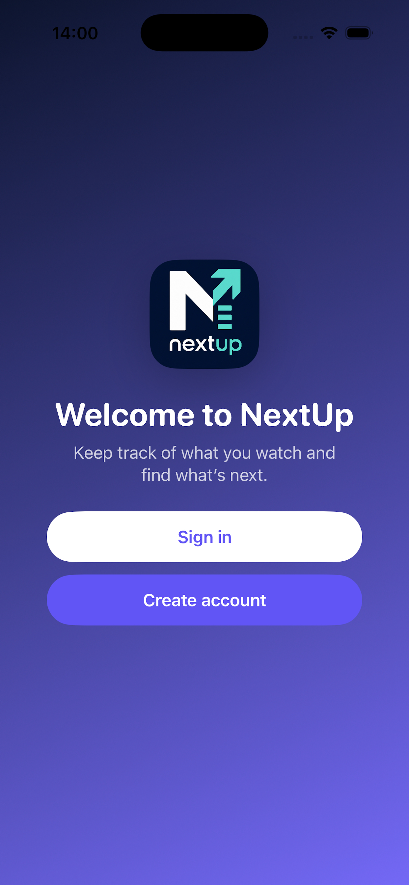
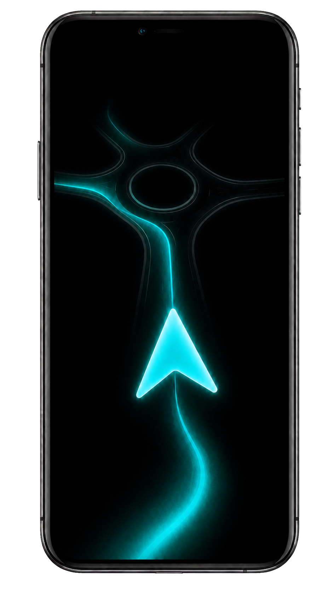

Product
Proper Job
Clearer guide prices for UK building work, built around the real levers that shape a job — not a black box.
SR3H · Oxford
We make useful digital products from complicated knowledge — for real people, real work and the occasional big question.
Independent product studio · working from the H B L Centre, Oxford
A small studio with room to think
SR3H works across the ordinary and the exploratory: tools that make a trade simpler, products that help people decide, and software systems that make complex work clearer.
Our early work is being shaped in Oxford’s innovation community. It gives us a practical place to make, discuss and test ideas — while keeping our feet on the ground about what people actually need.
Selected work
Each begins with a practical problem. Some are public-facing products; others are the systems that help us build and manage better work.

Product
Clearer guide prices for UK building work, built around the real levers that shape a job — not a black box.

Internal platform
A governed space for turning complex conversations into clear, traceable product decisions and build-ready work.

Research product
A local-first context engine exploring how people can work with more useful intelligence while staying in control of their information.

In development
A calmer way to keep track of what you watch and decide what comes next.
In development
A more thoughtful way to explore nearby places, new destinations and the small moments worth going out for.

In development
Navigation that respects the route a rider chose, instead of constantly trying to replace it.
Conchup Platform
Conchup is SR3H’s in-house engineering and management environment: a considered space for requirements, design decisions, software delivery and the human context around all of them.
It is being prepared for authorised collaborators. The public site introduces the idea; project access will connect into the secured platform when the right work and people are ready.
Access by invitation
SR3H Community Builds
Each year, we will make room for a small number of community projects: useful digital work for people and places that would benefit from it, without the usual barrier of a studio budget.
Our first community build is a new online home for Anup House in Bodh Gaya — helping a welcoming guesthouse tell its story more clearly and be easier for visitors to find.
Suggest a community projectHow we work
Work with SR3H
We welcome thoughtful conversations with potential partners, customers, collaborators and people interested in the work we are growing.
hello@sr3h.uk